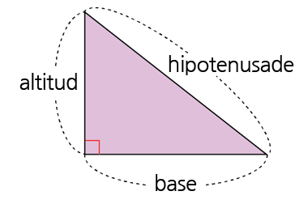

Actividad 1
Contenido
Consieramos elementos y forma del triángulo.
- Escribe △ABC.
- Un triángulo tiene
3 lados,3 vértices y3 ángulos. - La suma de los tres ángulos internos es
180˚ .
Consieramos elementos y forma del triángulo.
- Se dice
lado opuesto un lado que se encuentra de cara a un ángulo.
- Se dice
altitud del triángulo una línea perpendicular a la base.

En un triangulo rectangulo la linea trazada entre los dos lados del angulo recto se le denomina hipotenusa
